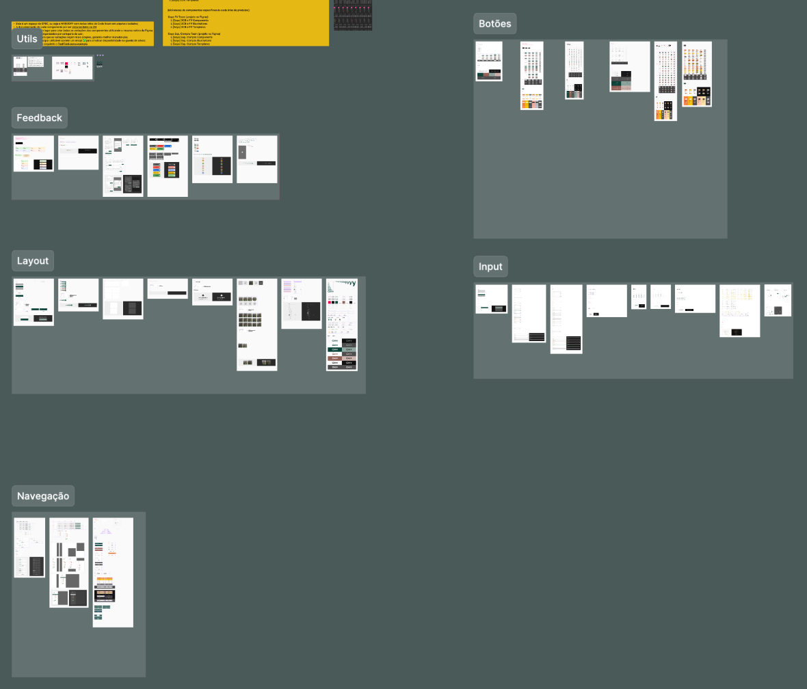
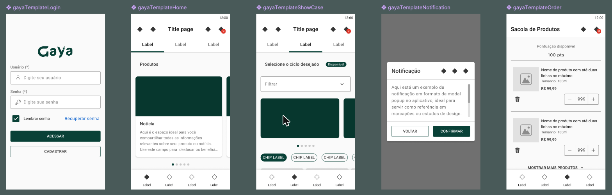

Legacy to migrate
Components and styles came from Adobe XD, now discontinued, and had to be rebuilt as a real system in Figma, not just moved.
One system for the brands of the Natura &Co Group, across web, iOS and Android.
An independent, authorial adaptation. Years have passed and I no longer work there, so this is a rebuild for portfolio use: generic themes, a few components, no real brand data or third-party material, and details changed on purpose (radii, specs). It is not the delivered result. It shows what I learned, what I would improve and how I work day to day.
I joined in 2024 to lead the design system team. GaYa already had a name, an homage to the tree planted at the company's headquarters, but the foundation still carried the legacy of Adobe XD, a tool Adobe discontinued years ago.
Components and styles came from Adobe XD, now discontinued, and had to be rebuilt as a real system in Figma, not just moved.
Each squad and business unit had its own light and dark themes. Every change risked breaking something somewhere else.
Design and code named things differently, so handoff was slow and each platform drifted on its own.
The goal was to turn GaYa into a system teams actually trust and contribute to.
Part of the job was firefighting: stabilize first, then scale.
ROI by the end of the year, from reuse, fewer remakes and no need to hire more external specialists.
components, built in the months after connecting Figma to AI.
design tokens in three tiers, synced from Figma Variables to the React repositories.
accessibility bugs after recalibrating the whole color system to WCAG 2.2 AA/AAA.
more efficient from design to code.
less time spent on handoff.
faster prototyping with the LogoType, Preview Themes and SimpleApp libraries.
Measured internally during my contract. Rounded, without baselines.
Each stage unlocked the next one.
Mapped what existed, cleaned the main Figma file folder by folder and stopped the breakages.
Semantic study of the system and a three-tier token architecture with multi-brand theming. The squad lead feared a major breaking change, and rightly so, but we rolled it out step by step and it worked.
Core, team components, templates and utilities split into clear libraries, with changelog and release notes.
Connected Figma to LLMs and Cursor for documentation, code scaffolding and icons.
A distributed contribution model so squads could extend the system without waiting on the core team.
Primitives hold raw values, semantic tokens give them a role and change with theme and mode, component tokens are local decisions. A brand is a mapping of tier 2, not a copy of the system. Try it:
--p-green-700
--p-orange-700
--p-pink-700Raw values. No meaning.
--gy-primary
--gy-surface
--gy-textA role. This tier swaps per theme and mode.
--btn-bg
--btn-fg
--btn-hLocal decisions that read from tier 2.
Core components by family, team components, patterns and templates. Figma Variables carry the tokens that sync to React. Details are blurred or removed on purpose.


I connected Figma to LLMs through MCP, with Claude and Cursor AI. About three months after proposing it, the team was shipping components at a different pace. People reviewed every delivery.
Usage and anatomy drafted from the Figma component, then reviewed.
A first React version generated from tokens and variants, then reviewed.
Icon sets generated and normalized to the grid, then curated by hand.
Design and code share names and structure, which is where the time savings came from.
Together with the branding team, I recalibrated the color system so text and interface pairs pass AA, and AAA where possible. The semantic tier owns the pairs, so the fix reached every brand at once.
Squads propose and build components under the same rules, with the core team as reviewer.
Every release explained, so teams know what changed and why.
Storybook as the source of truth, with visual checks before publishing.
I was a contractor through a partner company, hired for this service for one year. It is not a tech company, which made it more interesting.
Many alignments and talks along the way, to keep design, engineering and product on the same page.
I taught the team to use AI in the workflow, with Cursor AI for development. Engineering supported the idea from the start.
The support turned into results: the numbers above came from this way of working.
It was a great experience. Learnings, mistakes and wins are all part of the process.
A smaller set to show how I worked: tokens, three generic themes, light and dark, and 17 components you can try.
Foundations plus 17 components with live controls, a usage snippet and the tokens each one reads. Switch theme and mode to see tier 2 remap.
Open the StorybookA small navigable app built with the components: login, home, showcase, bag and notification. Swap theme and mode live.
Try the SimpleAppBetween 2024 and now, Claude Code got much better and I customized my own setup even more. This is how I would mix what I did then with what I can do today: more performance, same care.
Claude Code or Codex generating components, tests and stories from Figma tokens and variants, with people reviewing.
Figma Variables to code in a repeatable script, instead of syncing by hand.
Documentation, stories and visual checks generated and updated with every change.
The same scope in less time and probably with an even smaller team, focused on decisions and review.
AI does the heavy lifting. People own the decisions.
What gave the most headaches was holding on to a legacy project. We could not use AI freely or start something fresh, for fear of breaking it.
Some projects have a solid structure. But a legacy that was not well built or organized is more likely to break than a new build is.
A design system is no longer built the old way. Companies need to be open to evolving.
Projects will get even more robust, almost a snap of the fingers. This is my view as a design engineer, mixing design and code, specialized in AI engineering.
Want to work together or talk mentoring? Get in touch.
Talk to meI can walk you through the decisions and how AI changed the workflow. I am also open to working together or mentoring.